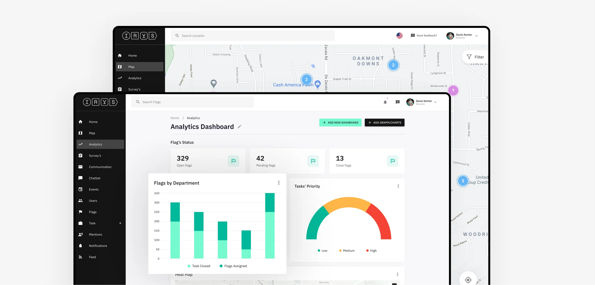
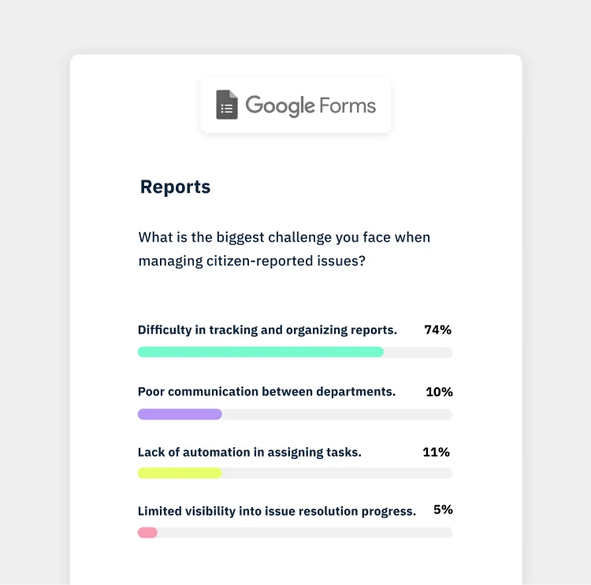
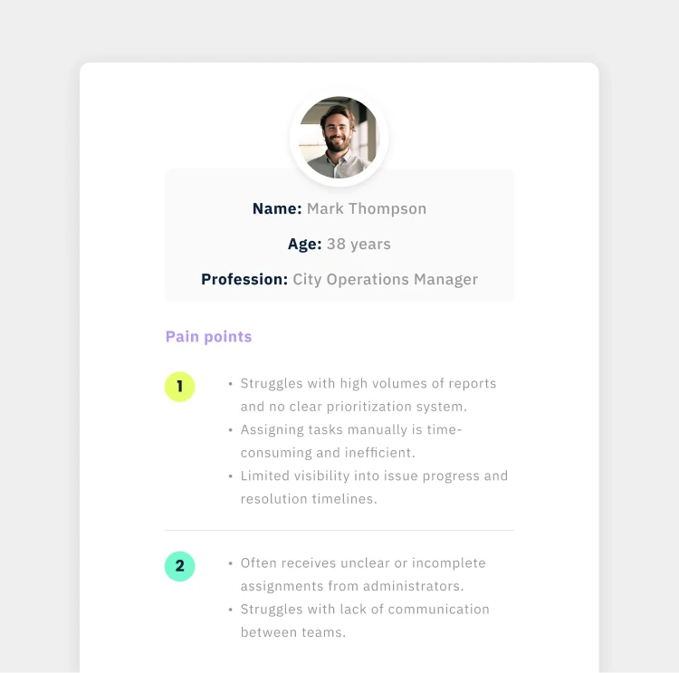
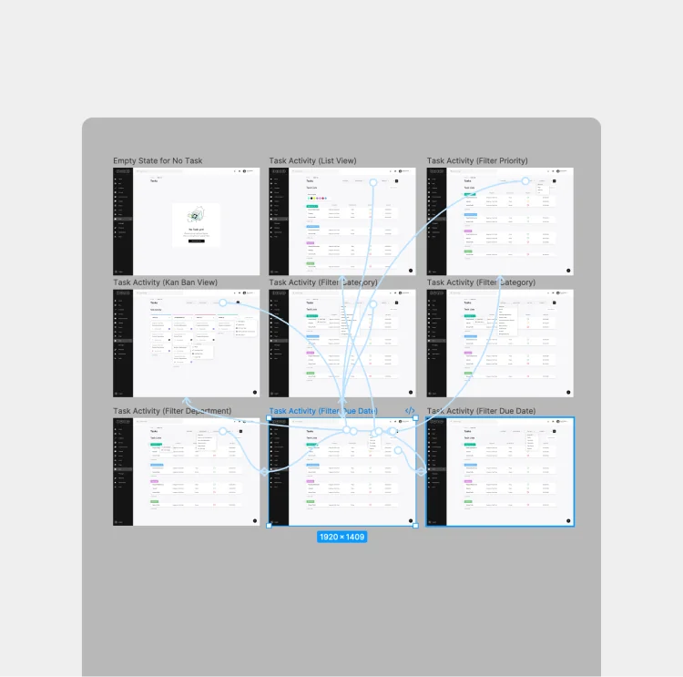

Prioritization
- Issue categorization
- Smart filtering
- Urgency signals
- Location-based grouping
- Status-based sorting
- Clear priority levels
- Reduced noise in views
- Faster case triage
−35%
Time per Case
Designing the system that turns citizen reports into real municipal action.

"Civic platforms don't break at the point of reporting. They break in how work is handled afterward."
When I took on this project, the challenge wasn't just helping citizens report issues — it was enabling municipalities to manage them effectively.
Everything entered the dashboard. Acting on it was another story.
Teams had to sort through incoming issues, decide priorities without clear signals, and manually coordinate across departments. Progress wasn't always visible, and understanding the state of a case often meant jumping between views. This translated into real operational friction: a 35% increase in time spent per case, a 28% delay in assignment, and over 40% of issues requiring manual follow-ups between teams. What should have streamlined operations ended up adding extra steps.
I worked on the dashboard alongside the mobile app and an evolving design system, building on an already advanced foundation. Each decision aimed to balance consistency, scalability, and real-world usability across teams.

Operations ResearchResearched how teams receive, prioritize, and resolve issues across departments using interviews, surveys, and workflow mapping. Mapped processes, identified bottlenecks, and uncovered gaps in coordination and visibility.

SynthesisSynthesized insights into clear operational problems using journey maps and structured flows. Aligned solutions with existing app flows and design system patterns in Figma, reframing the challenge into scalable workflows.
 Design System
Design System
Worked alongside the evolving design system in Figma, extending it to support data-heavy interfaces and complex interactions. Defined components, layouts, and patterns that ensured consistency while adapting to dashboard needs.

Prototype & TestDesigned and prototyped interfaces in Figma, focusing on prioritization, clarity, and execution across teams. Validated flows through usability testing and iteration, improving task handling and decision-making speed.
I redesigned the dashboard around three core principles: reducing operational friction, improving decision-making, and enabling teams to move faster from intake to resolution.
Resolution throughput increased, enabling teams to resolve more cases in less time and reducing backlog. With clearer prioritization, defined ownership, and more structured workflows, teams moved issues forward without the constant need for manual coordination. Task assignment became faster and more consistent, while progress was easier to track across departments.
Designing the dashboard made it clear that time is shaped by how information is organized. When issues are hard to identify, priorities are unclear, or ownership is undefined, everything slows down — even if the data is there. By restructuring how cases were surfaced, prioritized, and assigned, teams could recognize what mattered faster and move from awareness to action with less delay.
I'm open to selected collaborations and projects. Let's talk about what you're building, and how it can work better.
Get in Touch →